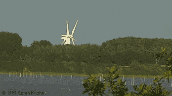
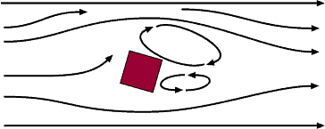

Wind Obstacles


This movie was shot at a coastal wind site with the wind coming
from the right side of the picture. It shows an interesting phenomenon:
 We would really expect the wind turbine to
the right (which is facing the wind directly) to be the one to
start first when the wind starts blowing. But you can see, that
the wind turbine to the right will not start at the low wind
speeds which are sufficient to drive the other two wind turbines.
The reason is the small wood in front of the wind turbines which
shelters the rightmost turbine in particular. In this case, the
annual production of these wind turbines is probably reduced
by some 15 per cent on average, and even more in case of the
rightmost turbine.
We would really expect the wind turbine to
the right (which is facing the wind directly) to be the one to
start first when the wind starts blowing. But you can see, that
the wind turbine to the right will not start at the low wind
speeds which are sufficient to drive the other two wind turbines.
The reason is the small wood in front of the wind turbines which
shelters the rightmost turbine in particular. In this case, the
annual production of these wind turbines is probably reduced
by some 15 per cent on average, and even more in case of the
rightmost turbine.
 (The turbines are located some five rotor
diameters apart, and the wood is located at a similar distance
from the first wind turbine. The reason why the turbines look
like they are standing very close together, is that the movie
was shot from about a mile away with the equivalent of a 1200
mm lens for a 35 mm camera).
(The turbines are located some five rotor
diameters apart, and the wood is located at a similar distance
from the first wind turbine. The reason why the turbines look
like they are standing very close together, is that the movie
was shot from about a mile away with the equivalent of a 1200
mm lens for a 35 mm camera).
Side
view of wind flow around an obstacle.
Note the pronounced turbulent airflow downstream

Obstacles to the wind such as buildings, trees, rock formations
etc. can decrease wind speeds significantly, and they often create
turbulence in their neighbourhood.
 As you can see from this drawing of typical
wind flows around an obstacle, the turbulent zone may extend
to some three time the height of the obstacle. The turbulence
is more pronounced behind the obstacle than in front of it.
As you can see from this drawing of typical
wind flows around an obstacle, the turbulent zone may extend
to some three time the height of the obstacle. The turbulence
is more pronounced behind the obstacle than in front of it.
 Therefore, it is best to avoid major obstacles
close to wind turbines, particularly if they are upwind in the
prevailing wind direction, i.e. "in front of" the turbine.
Therefore, it is best to avoid major obstacles
close to wind turbines, particularly if they are upwind in the
prevailing wind direction, i.e. "in front of" the turbine.
 Top
view of wind flow around an obstacle.
Top
view of wind flow around an obstacle.

Shelter
Behind Obstacles
Obstacles will decrease the wind speed downstream from the obstacle.
The decrease in wind speed depends on the porosity of
the obstacle, i.e. how "open" the obstacle is. (Porosity
is defined as the open area divided by the total area of the
object facing the wind).
 A building is obviously solid, and has no
porosity, whereas a fairly open tree in winter (with no leaves)
may let more than half of the wind through. In summer, however,
the foliage may be very dense, so as to make the porosity less
than, say one third.
A building is obviously solid, and has no
porosity, whereas a fairly open tree in winter (with no leaves)
may let more than half of the wind through. In summer, however,
the foliage may be very dense, so as to make the porosity less
than, say one third.
 The slowdown effect on the wind from an obstacle
increases with the height and length of the obstacle. The effect
is obviously more pronounced close to the obstacle, and close
to the ground.
The slowdown effect on the wind from an obstacle
increases with the height and length of the obstacle. The effect
is obviously more pronounced close to the obstacle, and close
to the ground.
 When manufacturers or developers calculate
the energy production for wind turbines, they always take obstacles
into account if they are close to the turbine - say, less than
1 kilometre away in one of the more important wind directions.
When manufacturers or developers calculate
the energy production for wind turbines, they always take obstacles
into account if they are close to the turbine - say, less than
1 kilometre away in one of the more important wind directions.
© Copyright 1999 Soren Krohn. All rights reserved.
Updated 23 January 2001
http://www.windpower.org/tour/wres/obst.htm